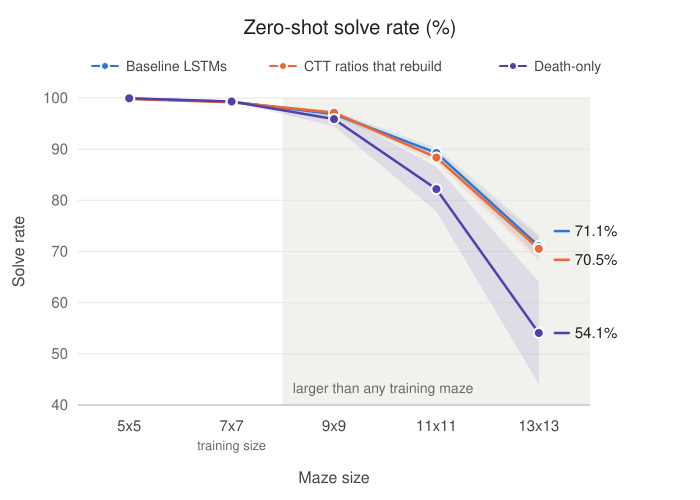

Background
Neural networks suffer from catastrophic forgetting. When a network is trained on a new task, the weights that encoded earlier tasks are overwritten and the earlier skills are lost. The problem is worse in reinforcement learning, where there is no fixed training set to revisit and the data distribution shifts as the policy changes.
Complementary Turnover Training (CTT) is a biologically inspired architecture that addresses this by continually replacing neurons rather than only adjusting their weights. It is motivated by adult neurogenesis and by the way biological memory is consolidated offline during sleep. CTT maintains a dedicated plastic layer, periodically removes the least useful neurons from it, and introduces new neurons in their place.
Project goals
We implement CTT over Long Short-Term Memory (LSTM) networks and test how well it counters catastrophic forgetting in sequences of reinforcement learning tasks. The project is divided into two parts, one per student.
- Does Hebbian-scored neural turnover during simulated sleep cycles enable more robust memory consolidation in an LSTM foraging agent than scoring neurons in isolation? (Ziyaad Shaboodien)
- Does the kill/birth ratio govern how well a CTT-based recurrent policy generalises zero-shot to mazes larger than any seen in training? (Nathan Del Fava)
The CTT pipeline
Turnover runs as a five-stage loop over the plastic layer. The rest of the network trains normally.
- Score. Compute a health or utility score for each neuron.
- Kill. Permanently remove the bottom p% of neurons by score.
- Birth. Replace each killed neuron with a new one chosen through selection.
- Gate. Newborn neurons start silent and are ramped in linearly over time.
- Homeostasis. Activity statistics are rescaled to keep the layer stable.
Results
Ziyaad Shaboodien
Scoring experiment

Nathan Del Fava
Turnover experiment

Key takeaways
- Figure 1. Only CTT remembers earlier seasons. No baseline survives any season before Spring, the last one it trained on, while both CTT variants keep 10 to 30% survival in Autumn and Winter.
- Figure 2. The kill/birth ratio does not change generalisation. The ratios that rebuild track the baselines down to 71% at 13x13, while death-only, which never replaces what it kills, falls to 54%.
Conclusions
- CTT showed evidence of remembering earlier tasks. It is the only architecture tested that retained any ability in seasons other than the most recent one.
- The choice of scorer is second order to the architecture. Replacing the isolation scorer with the Hebbian GHOST scorer changed results far less than adding turnover did.
- Experience replay, elastic weight consolidation and synaptic scaling were not sufficient on their own for this task sequence.
- The kill/birth ratio had no measurable effect on zero-shot generalisation. Every ratio tracked the baselines.
- Rebirth is necessary. Killing neurons without replacing them was the only setting that clearly degraded performance.
- Future work should focus on new algorithms for continual reinforcement learning task sequences rather than on refining the neuron scoring function.